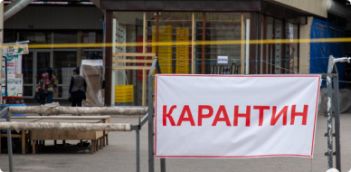
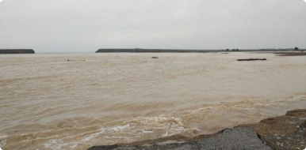

.png)



Мирзиёев рассказал, зачем было построено Сардобинское водохранилище
Карантин в Узбекистане продлен до 1 июня
Обмелевшая Сардоба: стихия или человеческий фактор?
Следствие проверяет четыре версии прорыва Сардобинской плотины
Выявлено еще 7 случаев коронавируса
Итоги второго месяца карантина
Хотите узнать новости первыми? подключите уведомления!
Последние новости


По факту прорыва Сардобинского водохранилища возбуждено уголовное дело
После прорыва дамбы Сардобинского водохранилища возбуждено уголовное дело, сообщили в пресс-службе Генпрокуратуры Узбекистана.
По факту прорыва Сардобинского водохранилища возбуждено уголовное дело
После прорыва дамбы Сардобинского водохранилища возбуждено уголовное дело, сообщили в пресс-службе Генпрокуратуры Узбекистана.
По факту прорыва Сардобинского водохранилища возбуждено уголовное дело
После прорыва дамбы Сардобинского водохранилища возбуждено уголовное дело, сообщили в пресс-службе Генпрокуратуры Узбекистана.
По факту прорыва Сардобинского водохранилища возбуждено уголовное дело
После прорыва дамбы Сардобинского водохранилища возбуждено уголовное дело, сообщили в пресс-службе Генпрокуратуры Узбекистана.
По факту прорыва Сардобинского водохранилища возбуждено уголовное дело
После прорыва дамбы Сардобинского водохранилища возбуждено уголовное дело, сообщили в пресс-службе Генпрокуратуры Узбекистана.
По факту прорыва Сардобинского водохранилища возбуждено уголовное дело
После прорыва дамбы Сардобинского водохранилища возбуждено уголовное дело, сообщили в пресс-службе Генпрокуратуры Узбекистана.

Всегда будьте в курсе последних новостей!
Установите мобильное приложение NAMANGANLIKLAR24 и все новости в вашем кармане!